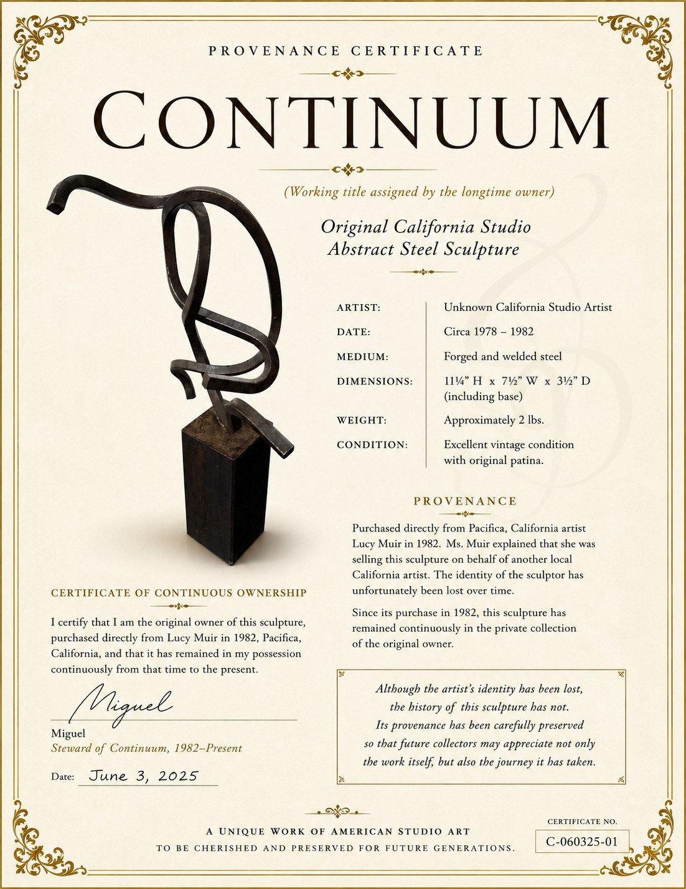

Curator's Selection
Continuum
Original California Studio Abstract Steel Sculpture
$485
A forged and welded steel sculpture with elegant movement, original patina, and documented continuous ownership from 1982 to the present.
Inquire to PurchaseThe Story
A remarkable object with a preserved history.
Continuum is a working title assigned by the longtime owner. The sculpture was purchased directly in Pacifica, California in 1982 from artist Lucy Muir, who explained that she was selling it on behalf of another local California artist. Although the sculptor's identity has been lost over time, the object's history has been carefully preserved.
Since its purchase, the piece has remained continuously in the private collection of the original owner. Its provenance, form, and patina give the sculpture the kind of presence Found House Co. looks for: quiet character, strong visual identity, and a story worth carrying forward.
Details
- Artist: Unknown California Studio Artist
- Date: Circa 1978–1982
- Medium: Forged and welded steel
- Dimensions: 11¼" H × 7½" W × 3½" D, including base
- Weight: Approximately 2 lbs.
- Condition: Excellent vintage condition with original patina
Provenance
Purchased directly from Pacifica, California artist Lucy Muir in 1982 and held continuously by the original owner from that time to the present.
View Provenance CertificateProvenance Certificate
